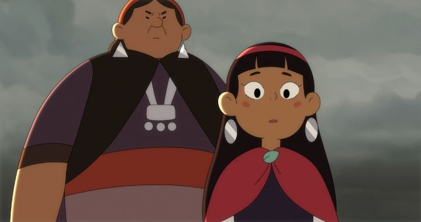

In 2020, a certain pandemic shut down the world. Many conventions and festivals, for their sake and for their fans, experimented with online-only events, at drastically reduced prices. The same was true for "Annecy," the world's largest animation film festival, held in France every Summer. They presented (most of) their 2020 selection online, all accessible with an "online pass" at about $30 USD, the price of perhaps two in-person films in normally sold-out theaters. I still hope to visit the real event one day, as a pilgrimage any animation fan should take as a tourist, but this online version is a great alternative that I hope remains.One film I saw was "Nahuel and the Magic Book," a co-production from Chile and Brazil. The family film starts with the birth of Nahuel, taking place on his father's fisherman boat in the middle of a storm. His mother having passed in birth, he lives alone with a father who spends his days working to support them both, and Nahuel is subject to bullying from other local kids. His biggest issue is a deathly fear of boats: this eventually leads him to seek out a magic spell that can help him conquer his internal fears, for his sake and for his father's. This leads him to the book in the movie's title, a book full of spells, including one for fears.A movie a picked blindly, I thought I knew what to expect after the first 10 minutes. But I was impressed: it quickly becomes a sprawling fantasy adventure for Nahuel to not only conquer his own fears, but to defeat Kalku, a dark wizard who can control ravens, also seeking out the powerful spell book for his own goals to conquer the world. From magicians and shamens, to adventurers in bars to talking animals, it's an epic quest for a boy. It reminded me heavily of young-adult graphic novels, specifically Kazu Kibuishi's "Amulet." I'm a sucker for this type of genre, so I was pleased, even if the story isn't particularly well-written despite the world-building (like several features at Annecy, the story felt far too long, especially when watching in a web-browser). The art style and animation is also a bit more impressive than it ought to be. Again, character designs feel exactly like what you'd find in a children's adventure graphic-novel series, or possibly a Cartoon Network show (think of "Amulet" or a bit of "Steven Universe," or Netflix cartoon series "Hilda"). It's a style that's grown old from overuse (it's very easy to draw and animate), but is plesant and diverse in character design here. The animation in particular is strong, not in character movement, but in background effects, especially with water and storms, which feature heavily in the story. I hope the filmmakers take the hint in my review and publish a graphic novel series based on "Nahuel and the Magic Book." If adapting the movie's story directly, they could simply take screenshots from the movie and have a prefect series for school libraries. But the adventure can be appreciated in any form, and moments of strong animation make this movie a fun discovery.
- "Ani" More reviews can be found at : https://2danicritic.github.io/ Previous review: review_Nadia_-_The_Secret_of_Blue_Water Next review: review_Napping_Princess